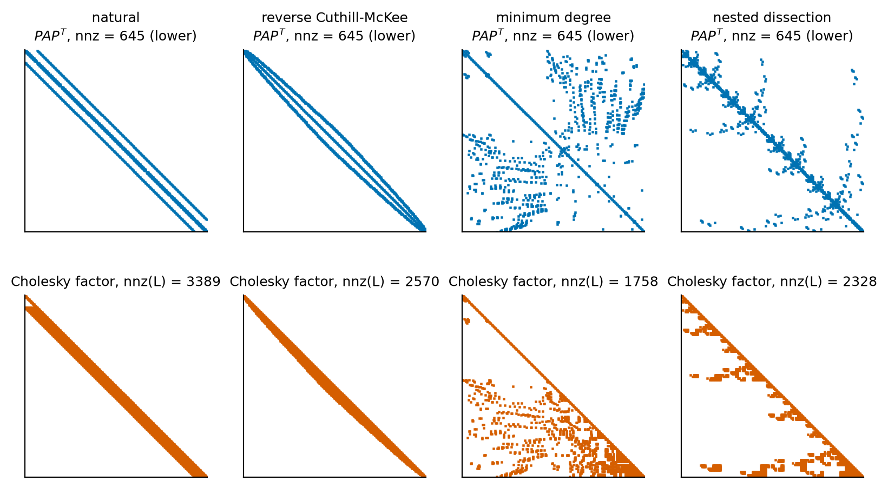
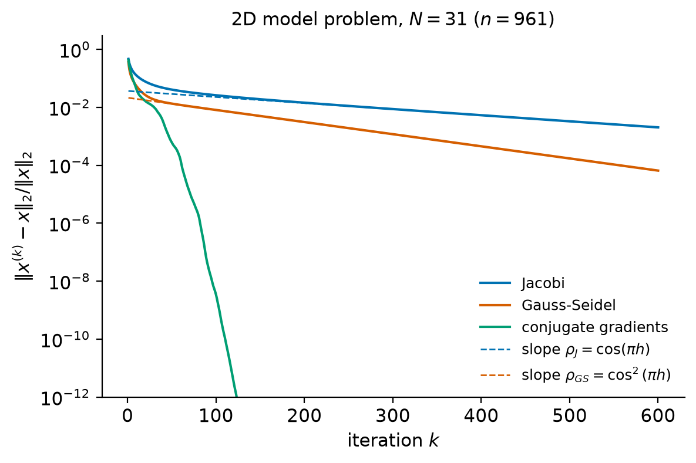
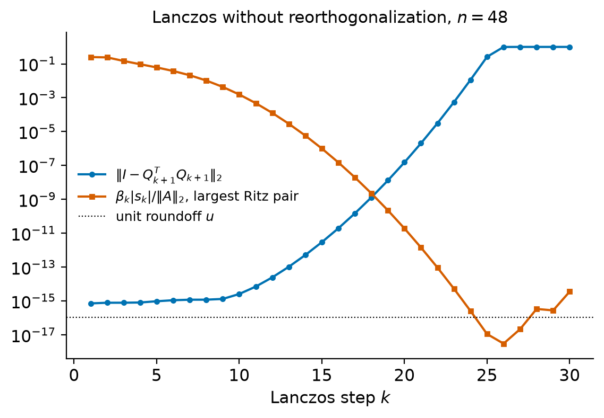
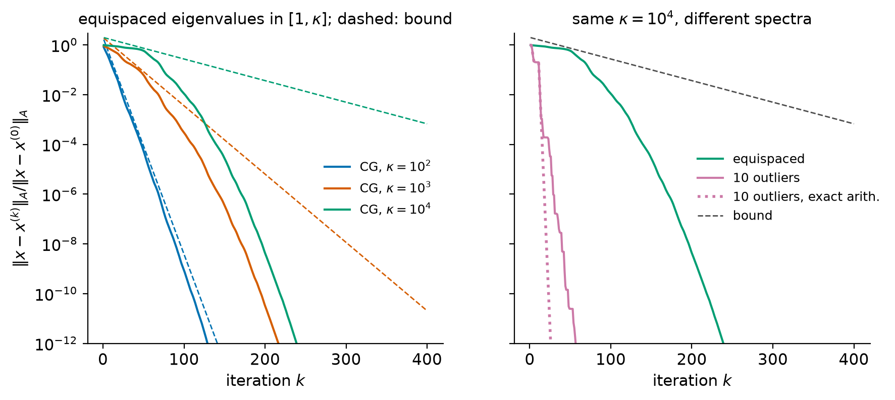

11. Sparse matrices and Krylov subspace methods#
The factorizations of the previous chapters (LU, Cholesky, QR, the QR algorithm) treat a matrix as a dense array: they need \(\bigO(n^2)\) words of memory and \(\bigO(n^3)\) flops. For the matrices that arise from partial differential equations, networks, structural models or statistics, \(n\) is often \(10^5\) to \(10^9\), and neither bound is affordable. Fortunately such matrices are almost always sparse: most entries are zero, and the number of nonzeros grows only linearly with \(n\). This chapter is about exploiting that structure.
There are two strategies. Sparse direct methods still compute an LU or Cholesky factorization but store and operate only on nonzeros, and they reorder the unknowns so that the factors stay sparse. Iterative methods never factor the matrix at all. They access \(A\) only through products \(v\mapsto Av\) and build an approximate solution from the vectors \(b, Ab, A^2b,\dots\). The best iterative methods, the Krylov subspace methods (conjugate gradients, GMRES, Lanczos, Arnoldi), are among the most important algorithms in scientific computing, and their analysis brings together much of this course: orthogonalization (Chapter 7), eigenvalues (Chapter 9), polynomial approximation, and the effect of rounding errors (Chapter 3).
Learning objectives
After working through this chapter you should be able to:
explain why dense factorizations are infeasible for large problems, store sparse matrices in COO, CSR and CSC formats, and count the cost of a sparse matrix-vector product;
describe fill-in, the graph model of elimination, and the purpose of the reverse Cuthill–McKee, minimum degree and nested dissection orderings;
prove the convergence theorem for stationary iterations and derive the convergence rates of Jacobi and Gauss–Seidel on the model problem;
derive the Arnoldi and Lanczos processes, GMRES and the conjugate gradient method, and state and prove their optimality properties;
prove the Chebyshev bound for conjugate gradients and the eigenvalue bound for GMRES, and explain their limitations (non-normality, superlinear convergence, finite precision);
construct and apply Jacobi and incomplete Cholesky preconditioners, choose stopping criteria in terms of backward error, and use SciPy’s sparse solvers and eigensolvers correctly.
11.1. Large sparse problems#
11.1.1. The cost of dense methods#
A dense matrix of order \(n\) occupies \(8n^2\) bytes in double precision, and its Cholesky factorization costs \(\tfrac13n^3\) flops (Chapter 6). For \(n = 10^6\) this is \(8\times10^{12}\) bytes (8 terabytes) of memory and about \(3.3\times10^{17}\) flops. Even if the memory were available, the factorization would take about four days on a machine that sustains \(10^{12}\) flops per second. Yet linear systems with \(10^6\) unknowns are routine, because the matrices that arise in practice are sparse.
We call a matrix sparse when it pays to store and operate on only its nonzero entries, and we write \(\mathrm{nnz}(A)\) for the number of stored entries. The typical situation is that each row has a bounded number of nonzeros, so that \(\mathrm{nnz}(A) = \bigO(n)\).
11.1.2. The model problem#
The standard example throughout this chapter comes from Poisson’s equation \(-\Delta w = f\) on the unit square with \(w = 0\) on the boundary. Choose an integer \(N\), let \(h = 1/(N+1)\), and approximate \(w\) at the interior grid points \((ih, jh)\), \(1\le i,j\le N\), by values \(w_{ij}\). Replacing the second derivatives by centered differences gives the five-point scheme
where values with an index \(0\) or \(N+1\) are zero. In one dimension the same construction for \(-w'' = f\) on \((0,1)\) gives the tridiagonal matrix \(h^{-2}T_N\) with
Numbering the unknowns row by row, (11.1) becomes \(h^{-2}Aw = f\), where \(A\in\R^{n\times n}\), \(n = N^2\), is the Kronecker sum
Here \(B\otimes C\) is the block matrix \([b_{ij}C]\). We drop the factor \(h^{-2}\) from now on, since it changes neither the condition number nor the behavior of the iterative methods below. Every row of \(A\) has at most five nonzeros and \(\mathrm{nnz}(A) = 5N^2 - 4N\). The matrix is symmetric, and its spectrum is known exactly, which makes it a convenient test case.
Theorem 11.1 (Eigenvalues of the discrete Laplacian)
Let \(h = 1/(N+1)\).
The matrix \(T_N\) has the eigenvalues \(\lambda_j = 2 - 2\cos(j\pi h) = 4\sin^2(j\pi h/2)\), \(j = 1,\dots,N\), with eigenvectors \(v_j\) whose entries are \((v_j)_k = \sin(jk\pi h)\).
The matrix \(A\) of (11.2) has the \(N^2\) eigenvalues \(\lambda_i + \lambda_j\), \(1\le i,j\le N\), with eigenvectors \(v_i\otimes v_j\).
Both matrices are symmetric positive definite, and \(\kappa_2(T_N) = \kappa_2(A) = \cot^2(\pi h/2)\), which behaves like \(4/(\pi h)^2\) as \(h\to0\).
Proof. (1) Fix \(j\) and put \(\theta = j\pi h\) and \(s_k = \sin(k\theta)\), so that \(s_0 = 0\) and \(s_{N+1} = \sin(j\pi) = 0\). With these conventions every row of \(T_Nv_j\), including the first and the last, reads \(-s_{k-1} + 2s_k - s_{k+1}\). The identity \(\sin((k-1)\theta) + \sin((k+1)\theta) = 2\sin(k\theta)\cos\theta\) gives \((T_Nv_j)_k = (2 - 2\cos\theta)s_k\). The vector \(v_j\) is nonzero because \(s_1 = \sin(j\pi h)\neq0\), and the \(N\) values \(\lambda_j\) are distinct because the cosine is injective on \((0,\pi)\); hence these are all the eigenvalues.
(2) The mixed product rule \((B\otimes C)(x\otimes y) = Bx\otimes Cy\) gives \((I\otimes T_N)(v_i\otimes v_j) = \lambda_j\,v_i\otimes v_j\) and \((T_N\otimes I)(v_i\otimes v_j) = \lambda_i\,v_i\otimes v_j\). The vectors \(v_i\) are mutually orthogonal (eigenvectors of a symmetric matrix for distinct eigenvalues), and \((v_i\otimes v_j)^T(v_k\otimes v_l) = (v_i^Tv_k)(v_j^Tv_l)\), so the \(N^2\) vectors \(v_i\otimes v_j\) are orthogonal, hence linearly independent, and we have found all eigenvalues.
(3) All eigenvalues are positive and the matrices are symmetric, so \(\kappa_2 = \lambda_{\max}/\lambda_{\min}\). For \(T_N\) this is \(\sin^2(N\pi h/2)/\sin^2(\pi h/2)\), and \(N\pi h/2 = \pi/2 - \pi h/2\) gives \(\sin(N\pi h/2) = \cos(\pi h/2)\). For \(A\) the extreme eigenvalues are \(2\lambda_1\) and \(2\lambda_N\), with the same ratio. Finally \(\cot x\sim1/x\) as \(x\to0\).
Example 11.1 (The smallest cases)
For \(N = 3\), \(h = 1/4\), the eigenvalues of \(T_3\) are \(2-\sqrt2\approx0.586\), \(2\) and \(2+\sqrt2\approx3.414\), and \(\kappa_2(T_3) = (2+\sqrt2)/(2-\sqrt2) = 3 + 2\sqrt2 = \cot^2(\pi/8)\). For \(N = 31\) (so \(n = 961\)) the condition number of \(A\) is \(\cot^2(\pi/64)\approx414.3\), and for \(N = 100\) it is about \(4134\). Halving \(h\) multiplies \(\kappa_2(A)\) by about four.
Two facts about the model problem shape everything that follows. A direct method must cope with fill-in: the Cholesky factor of \(A\) is much denser than \(A\) (Section 11.3). And \(\kappa_2(A)\) grows like \(h^{-2}\), while the convergence of iterative methods is governed by the spectrum.
11.1.3. The matrix-vector product as the basic operation#
An iterative method needs only the ability to compute \(y = Ax\) for a given \(x\). For a sparse matrix this costs about \(2\,\mathrm{nnz}(A)\) flops, about \(10n\) for the model problem, compared with \(2n^2\) for a dense matrix. The product need not even come from a stored matrix: it may be a routine that applies a differential operator, a composition of simpler operators, or a Jacobian-vector product. This “matrix-free” viewpoint is one of the main attractions of Krylov methods.
11.2. Sparse storage formats#
A sparse format stores the nonzero values and enough integer information to
recover their positions. Three formats are standard, and SciPy’s
scipy.sparse module provides all three.
Coordinate (COO) format stores three arrays of length \(\mathrm{nnz}\): row indices, column indices and values. It is the natural format for assembling a matrix, because entries can be appended in any order (SciPy sums duplicate entries on conversion).
Compressed sparse row (CSR) format stores the values row by row in an array
data, their column indices inindices, and an arrayindptrof length \(n+1\) such that row \(i\) occupies positionsindptr[i]toindptr[i+1]-1(counting from zero, as in Python).Compressed sparse column (CSC) format is CSR applied to \(A^T\): values are stored column by column, together with their row indices.
CSR needs \(\mathrm{nnz}\) floating-point numbers and \(\mathrm{nnz} + n + 1\) integers. It gives fast access to rows and a fast product \(Ax\); CSC gives fast access to columns and is the format expected by sparse LU codes such as SuperLU.
Example 11.2 (Three formats for one matrix)
The matrix
has 7 nonzeros. With zero-based indices its representations are:
Format |
Arrays |
|---|---|
COO |
rows \((0,0,1,2,2,3,3)\), columns \((0,3,1,0,2,1,3)\), values \((5,1,8,2,3,4,7)\) |
CSR |
|
CSC |
|
For \(x = (1,2,3,4)^T\), Algorithm 11.1 gives \(Ax = (9, 16, 11, 36)^T\).
Algorithm 11.1 (Matrix-vector product in CSR format)
Input: arrays indptr, indices, data of \(A\in\R^{n\times n}\) in CSR
format; \(x\in\R^n\).
Output: \(y = Ax\).
For \(i = 0,\dots,n-1\):
\(s\leftarrow 0\).
For \(p = \mathtt{indptr}[i],\dots,\mathtt{indptr}[i+1]-1\): \(s\leftarrow s + \mathtt{data}[p]\cdot x[\mathtt{indices}[p]]\).
\(y_i\leftarrow s\).
Each stored entry is used in one multiplication and one addition, so the
cost is \(2\,\mathrm{nnz}(A)\) flops. The access to \(x\) is indirect (through
indices), which makes sparse products much slower per flop than dense
level-3 operations (Chapter 1): they are limited by memory
traffic, not by arithmetic.
In SciPy one builds sparse matrices with scipy.sparse.coo_array,
csr_array or csc_array, or with constructors such as diags, kron,
eye and block_array, and writes the product as A @ x. The model matrix
(11.2) takes two lines:
T = sp.diags([-1.0, 2.0, -1.0], [-1, 0, 1], shape=(N, N))
A = sp.kron(sp.eye(N), T, format="csr") + sp.kron(T, sp.eye(N), format="csr")
(Without format="csr", kron may return a block format that stores some
explicit zeros for small \(N\).)
Warning
Inserting a new nonzero into a CSR matrix requires shifting the arrays and costs \(\bigO(\mathrm{nnz})\). Assemble in COO format, or with the constructors above, and convert once. And never convert a large sparse matrix to a dense array “just to check”: for the model problem with \(N = 100\) the dense array needs 800 MB, the CSR arrays less than 1 MB.
11.3. Sparse direct methods in brief#
Gaussian elimination and Cholesky factorization can be carried out on a sparse matrix, but the factors are usually denser than the matrix. An entry that is zero in \(A\) but nonzero in \(L\) is called fill-in. How much fill occurs depends strongly on the order of the unknowns, and choosing a good order is the central problem of sparse direct methods. We describe the main ideas without proofs; George and Liu [1981] and Davis [2006] (Chapter 7) give the theory and the algorithms.
11.3.1. Fill-in and the elimination graph#
Associate with a symmetric matrix \(A\) the graph \(G(A)\) with vertices \(1,\dots,n\) and an edge \(\{i,j\}\) whenever \(a_{ij}\neq0\), \(i\neq j\). The first step of Cholesky factorization subtracts a multiple of \(a_1a_1^T/a_{11}\) from the trailing block, which creates a nonzero at position \((i,j)\) whenever \(a_{i1}\neq0\) and \(a_{j1}\neq0\). In graph terms: eliminating a vertex makes its neighbors a clique. Continuing, the nonzero structure of the Cholesky factor \(L + L^T\) is the graph obtained by eliminating the vertices one after another in this way (barring accidental cancellation). Reordering the unknowns, \(A\mapsto PAP^T\) with a permutation matrix \(P\), changes the elimination order and hence the fill, but not the solution, and it preserves symmetry and definiteness.
Example 11.3 (The arrow matrix)
Let
which is symmetric positive definite (the Schur complement of the identity block is \(5 - 4 = 1 > 0\)). In \(G(A)\) vertex 1 is joined to all others. The first elimination step turns the trailing block into \(I - \tfrac15\mathbf{1}\mathbf{1}^T\), which is full: the Cholesky factor is a full lower triangle with 15 nonzeros. If we number vertex 1 last, each of the vertices \(2,\dots,5\) has only one neighbor when it is eliminated, no fill occurs, and \(L\) has the 9 nonzeros of the lower triangle of \(PAP^T\).
11.3.2. Orderings#
Finding an ordering that minimizes fill is NP-hard, so practical methods are heuristics [Davis, 2006].
Reverse Cuthill–McKee (RCM) numbers the vertices by a breadth-first search from a vertex of low degree, and then reverses the order. It aims at a small bandwidth or profile: all fill then stays inside the band. A band Cholesky factorization of semibandwidth \(\beta\) costs \(\bigO(n\beta^2)\) flops and \(\bigO(n\beta)\) storage.
Minimum degree eliminates, at each step, a vertex of smallest degree in the current elimination graph, a greedy way of creating small cliques. Modern codes use the approximate minimum degree variant, which is much faster to compute.
Nested dissection finds a small set of vertices, a separator, whose removal splits the graph into two pieces of similar size, orders the separator last, and recurses on the pieces. For the \(N\times N\) grid of the model problem, separators of size \(N\) exist at every level, and nested dissection produces a factor with \(\bigO(n\log n)\) nonzeros in \(\bigO(n^{3/2})\) flops, compared with \(\bigO(n^{3/2})\) nonzeros and \(\bigO(n^2)\) flops for the natural (banded) order with \(\beta = N\) [George and Liu, 1981].
Figure 11.1 shows the four orderings for the model problem with \(N = 15\). The lower triangle of \(A\) has 645 nonzeros; the Cholesky factor has 3389 nonzeros in the natural order, 2570 after RCM, 1758 with the minimum degree ordering used by SuperLU, and 2328 with a simple nested dissection ordering of our own. For such a small grid, minimum degree wins; the asymptotic advantage of nested dissection shows on larger grids and with more careful separators.


Figure 11.1 Sparsity patterns of the reordered model matrix \(PAP^T\) for \(N = 15\) (top) and of its Cholesky factor (bottom) for four orderings. The number of nonzeros of \(A\) is the same in each column; the fill in \(L\) is not.#
11.3.3. Sparse direct solvers in SciPy#
scipy.sparse.linalg.spsolve(A, b) solves \(Ax = b\) with a sparse LU
factorization, and scipy.sparse.linalg.splu(A) returns the factorization
object, whose solve method can be reused for many right-hand sides. Both
call SuperLU, which computes \(P_rAP_c = LU\) with a fill-reducing column
ordering (permc_spec, by default COLAMD) and threshold partial pivoting.
For a symmetric positive definite matrix, the options
permc_spec="MMD_AT_PLUS_A", diag_pivot_thresh=0 and
options=dict(SymmetricMode=True) request a symmetric minimum degree
ordering without pivoting, which is then equivalent to a sparse Cholesky
factorization. The case study applies it to a structural stiffness matrix.
Sparse direct methods are robust: they are backward stable under the same conditions as their dense counterparts, and their cost does not depend on the conditioning. They are the method of choice for two-dimensional problems and for many three-dimensional problems of moderate size. Their limitation is fill: for three-dimensional grids the separators are much larger relative to \(n\) than in two dimensions, and memory becomes the bottleneck. This is where iterative methods take over.
11.4. Stationary iterations#
11.4.1. Splittings#
Split \(A = M - N\) with \(M\) nonsingular and easy to solve with. Then \(Ax = b\) is equivalent to \(Mx = Nx + b\), which suggests the iteration
The second form shows that each step corrects the iterate by \(M^{-1}\) applied to the residual \(r^{(k)} = b - Ax^{(k)}\). Subtracting the identity \(x = x + M^{-1}(b - Ax)\) satisfied by the solution, the errors \(e^{(k)} = x - x^{(k)}\) satisfy
Write \(A = D + L + U\) with \(D\) diagonal and \(L\) and \(U\) the strictly lower and upper triangular parts (in this section only; elsewhere \(L\) is a triangular factor). The two classical choices are
the Jacobi iteration, \(M = D\): every component is updated from the old values, \(x_i^{(k+1)} = \big(b_i - \sum_{j\neq i}a_{ij}x_j^{(k)}\big)/a_{ii}\);
the Gauss–Seidel iteration, \(M = D + L\): the components are updated in order and the new values are used as soon as they are available.
Each step costs one sparse product and a diagonal or triangular solve, about \(2\,\mathrm{nnz}(A)\) flops in both cases.
11.4.2. The convergence theorem#
Theorem 11.2 (Convergence of stationary iterations)
Let \(A = M - N\) with \(A\) and \(M\) nonsingular and \(G = M^{-1}N\). The iteration (11.3) converges to \(x = A^{-1}b\) for every \(b\) and every starting vector \(x^{(0)}\) if and only if \(\rho(G) < 1\). In that case, for every \(\epsilon>0\) there is a constant \(C_\epsilon\) such that \(\|e^{(k)}\|\le C_\epsilon(\rho(G)+\epsilon)^k\|e^{(0)}\|\) for all \(k\).
Proof. Suppose \(\rho(G)<1\) and let \(\epsilon>0\) with \(\rho(G)+\epsilon<1\). There is an induced matrix norm \(\|\cdot\|_\ast\) with \(\|G\|_\ast\le\rho(G)+\epsilon\) [Horn and Johnson, 2013] (Lemma 5.6.10, quoted in Chapter 1). Then \(\|e^{(k)}\|_\ast\le\|G\|_\ast^k\|e^{(0)}\|_\ast\le(\rho(G)+\epsilon)^k\|e^{(0)}\|_\ast\), which tends to zero, and the equivalence of norms on \(\R^n\) gives the bound in any norm, with a constant \(C_\epsilon\) that absorbs the equivalence constants.
Conversely, suppose \(\rho(G)\ge1\) and let \(Gv = \lambda v\) with \(|\lambda|\ge1\) and \(v\neq0\), possibly complex. Write \(v = a + ib\) with real \(a, b\). If \(G^ka\to0\) and \(G^kb\to0\), then \(G^kv = \lambda^kv\to0\), which is impossible since \(|\lambda^k|\,\|v\|\ge\|v\|>0\). So for \(x^{(0)} = x - a\) or \(x^{(0)} = x - b\) the errors \(G^ke^{(0)}\) do not tend to zero.
The number of steps needed to reduce the error by a factor \(10^{-d}\) is thus about \(d\ln 10/(-\ln\rho(G))\) for large \(k\). When \(\rho(G) = 1-\delta\) with small \(\delta\), this is about \(2.3\,d/\delta\) steps. As Chapter 1 warned, \(\|G^k\|\) can grow for a while before it decays when \(G\) is far from normal, so \(\rho(G)<1\) guarantees only asymptotic convergence.
A simple sufficient condition: if \(A\) is strictly diagonally dominant by rows, \(|a_{ii}| > \sum_{j\neq i}|a_{ij}|\) for all \(i\), then the Jacobi matrix \(G_J = -D^{-1}(L+U)\) has \(\|G_J\|_\infty = \max_i\sum_{j\neq i}|a_{ij}|/|a_{ii}|<1\), so \(\rho(G_J)<1\) and Jacobi converges. For symmetric positive definite \(A\), Gauss–Seidel always converges (Exercise 11.4), whereas Jacobi may not: the lab exhibits an SPD matrix with \(\rho(G_J) = 1.8\).
11.4.3. The model problem#
For the model problem \(D = 4I\), so \(G_J = I - A/4\), and by Theorem 11.1 its eigenvalues are \(1 - (\lambda_i+\lambda_j)/4 = \tfrac12\big(\cos(i\pi h) + \cos(j\pi h)\big)\). The largest in modulus is attained for \(i = j = 1\) (and, with the opposite sign, for \(i = j = N\)):
The same value holds for the one-dimensional matrix \(T_N\), where \(G_J = I - T_N/2\) has the eigenvalues \(\cos(j\pi h)\). For Gauss–Seidel, the theory of consistently ordered matrices due to Young shows that \(\rho(G_{GS}) = \rho(G_J)^2 = \cos^2(\pi h)\) for the model problem in the natural ordering [Demmel, 1997, Saad, 2003]; we verify this numerically in the lab rather than prove it. So Gauss–Seidel needs half as many steps as Jacobi, and both need \(\bigO(h^{-2}) = \bigO(N^2) = \bigO(n)\) steps to reduce the error by a fixed factor.
Example 11.4 (Jacobi and Gauss–Seidel on small and large grids)
For \(T_3\) the Jacobi matrix \(I - T_3/2\) has eigenvalues \(\cos(\pi/4) = \sqrt2/2\), \(0\) and \(-\sqrt2/2\), so \(\rho(G_J) = \sqrt2/2\approx0.707\), and \(\rho(G_{GS}) = 1/2\): each Gauss–Seidel step halves the error asymptotically. For the two-dimensional model problem with \(N = 31\), \(\rho(G_J) = \cos(\pi/32)\approx0.99518\), and reducing the error by \(10^{-6}\) takes about \(2862\) Jacobi steps or \(1431\) Gauss–Seidel steps. Figure 11.2 shows both iterations together with the conjugate gradient method of Section 11.8.


Figure 11.2 Relative error of Jacobi, Gauss–Seidel and conjugate gradients for the model problem with \(N = 31\) (\(n = 961\)), random exact solution, \(x^{(0)} = 0\). The dashed lines have the asymptotic slopes \(\rho(G_J)\) and \(\rho(G_{GS}) = \rho(G_J)^2\).#
The figure also shows why the stationary methods are not hopeless: the error drops quickly in the first few steps. The eigenvalues of \(G_J\) near \(\pm1\) belong to smooth and to highly oscillating eigenvectors, and a damped variant of Jacobi reduces all oscillatory error components by a fixed factor per step. This smoothing property is the basis of multigrid methods, which combine a few smoothing steps with corrections computed on coarser grids and solve the model problem in \(\bigO(n)\) operations [Saad, 2003] (Chapter 13). The successive overrelaxation method (SOR), a weighted Gauss–Seidel iteration, improves the rate to \(1 - \bigO(h)\) with an optimal weight [Demmel, 1997] (Chapter 6).
11.5. Krylov subspaces#
A stationary iteration with \(M = I\) produces \(x^{(k)}\in x^{(0)} + \Span\{r^{(0)}, Ar^{(0)},\dots,A^{k-1}r^{(0)}\}\), but it uses a fixed combination of these vectors. Krylov methods choose the best combination.
Definition 11.1 (Krylov subspace)
For \(A\in\R^{n\times n}\), \(b\in\R^n\) and \(k\ge1\), the \(k\)th Krylov subspace is
The spaces are nested, \(\mathcal{K}_k\subseteq\mathcal{K}_{k+1}\), and \(A\mathcal{K}_k\subseteq\mathcal{K}_{k+1}\). Their dimension grows by one at each step until, at some index \(d\) (the grade of \(b\) with respect to \(A\)), \(A^db\) becomes a linear combination of the previous vectors; from then on \(\mathcal{K}_k = \mathcal{K}_d\) for all \(k\ge d\), and \(\mathcal{K}_d\) is invariant under \(A\). Why should the solution of \(Ax = b\) be found in such a space? Because \(A^{-1}\) is a polynomial in \(A\).
Theorem 11.3 (The solution lies in a Krylov subspace)
Let \(A\) be nonsingular with minimal polynomial of degree \(m\). Then \(A^{-1}b\in\mathcal{K}_m(A,b)\) for every \(b\).
Proof. Let \(q(z) = \sum_{j=0}^mc_jz^j\) be the minimal polynomial, so \(q(A) = 0\). Its roots are eigenvalues of \(A\), and \(0\) is not an eigenvalue, so \(c_0 = q(0)\neq0\). From \(c_0I = -\sum_{j=1}^mc_jA^j\) we get \(A^{-1} = -c_0^{-1}\sum_{j=1}^mc_jA^{j-1}\), and applying this to \(b\) gives a combination of \(b, Ab,\dots,A^{m-1}b\).
If \(A\) is diagonalizable with only \(m\) distinct eigenvalues, its minimal polynomial has degree \(m\), and the solution lies in an \(m\)-dimensional Krylov space. A matrix with a few clusters of eigenvalues is “almost” of this kind, and we will see that Krylov methods then converge quickly.
The vectors \(b, Ab, A^2b,\dots\) are a terrible basis: they are the iterates of the power method (Chapter 9) and turn towards a dominant eigenvector, so the Krylov matrix \([b, Ab,\dots,A^{k-1}b]\) becomes ill-conditioned very quickly. Every practical Krylov method therefore builds an orthonormal basis of \(\mathcal{K}_k\) as it goes.
11.6. The Arnoldi and Lanczos processes#
11.6.1. Arnoldi#
The Arnoldi process [Arnoldi, 1951] applies Gram–Schmidt orthogonalization (Chapter 7) to the Krylov sequence, but orthogonalizes \(Aq_j\) instead of \(A^jb\), which spans the same space and avoids the ill-conditioned power basis.
Algorithm 11.2 (Arnoldi process (modified Gram–Schmidt))
Input: \(A\in\R^{n\times n}\) (or a routine for \(v\mapsto Av\)), \(b\neq0\), number of steps \(k\).
Output: \(Q_{k+1} = [q_1,\dots,q_{k+1}]\) and the \((k+1)\times k\) upper Hessenberg matrix \(\tilde H_k = [h_{ij}]\).
\(q_1\leftarrow b/\|b\|_2\).
For \(j = 1,\dots,k\):
\(w\leftarrow Aq_j\).
For \(i = 1,\dots,j\): \(h_{ij}\leftarrow q_i^Tw\); \(w\leftarrow w - h_{ij}q_i\).
\(h_{j+1,j}\leftarrow\|w\|_2\). If \(h_{j+1,j} = 0\), stop (breakdown).
\(q_{j+1}\leftarrow w/h_{j+1,j}\).
Step \(j\) costs one product with \(A\) and about \(4nj\) flops for the orthogonalization, so \(k\) steps cost \(k\) products plus about \(2nk^2\) flops, and the basis occupies \((k+1)n\) words. This growth with \(k\) is the main practical limitation of Arnoldi-based methods.
Theorem 11.4 (The Arnoldi relation)
Suppose Algorithm 11.2 runs for \(k\) steps without breakdown. Then \(q_1,\dots,q_{k+1}\) are orthonormal, \(\Span\{q_1,\dots,q_j\} = \mathcal{K}_j(A,b)\) for \(j = 1,\dots,k+1\), and
where \(H_k\) is the square upper Hessenberg matrix formed by the first \(k\) rows of \(\tilde H_k\). Moreover, breakdown occurs at step \(j\) (\(h_{j+1,j} = 0\)) if and only if \(\mathcal{K}_j(A,b)\) is invariant under \(A\).
Proof. We argue by induction on \(j\). Assume \(q_1,\dots,q_j\) are orthonormal with span \(\mathcal{K}_j\). In exact arithmetic the modified Gram–Schmidt loop produces the same vector as classical Gram–Schmidt, \(w = Aq_j - \sum_{i\le j}(q_i^TAq_j)q_i\), which is orthogonal to \(q_1,\dots,q_j\). If \(w\neq0\), \(q_{j+1} = w/\|w\|_2\) extends the orthonormal set, and \(q_{j+1}\in\Span\{Aq_j, q_1,\dots,q_j\}\subseteq\mathcal{K}_{j+1}\) because \(Aq_j\in A\mathcal{K}_j\subseteq\mathcal{K}_{j+1}\). Comparing dimensions, the span of \(q_1,\dots,q_{j+1}\) is \(\mathcal{K}_{j+1}\). Rearranging the definition of \(w\) gives \(Aq_j = \sum_{i=1}^{j+1}h_{ij}q_i\), which is column \(j\) of \(AQ_k = Q_{k+1}\tilde H_k\); multiplying by \(Q_k^T\) gives \(H_k = Q_k^TAQ_k\).
Breakdown means \(w = 0\), that is \(Aq_j\in\Span\{q_1,\dots,q_j\} = \mathcal{K}_j\). Since \(Aq_i\in\mathcal{K}_{i+1}\subseteq\mathcal{K}_j\) for \(i<j\) anyway, this holds if and only if \(A\mathcal{K}_j\subseteq\mathcal{K}_j\).
A breakdown is therefore good news: the Krylov space contains an invariant subspace, and we will see that GMRES and CG then have found the exact solution (Exercise 11.6).
Example 11.5 (Arnoldi by hand)
Let \(A = \diag(1,2,3)\) and \(b = (1,1,1)^T\). Then \(q_1 = (1,1,1)^T/\sqrt3\), \(Aq_1 = (1,2,3)^T/\sqrt3\) and \(h_{11} = q_1^TAq_1 = 2\). The remainder \(w = (-1,0,1)^T/\sqrt3\) has \(h_{21} = \sqrt{2/3}\), so \(q_2 = (-1,0,1)^T/\sqrt2\). Next \(Aq_2 = (-1,0,3)^T/\sqrt2\), \(h_{12} = \sqrt{2/3}\), \(h_{22} = 2\), and \(w = (1,-2,1)^T/(3\sqrt2)\) with \(h_{32} = 1/\sqrt3\) and \(q_3 = (1,-2,1)^T/\sqrt6\). Thus
The eigenvalues of \(H_2\) are \(2\pm\sqrt{2/3}\approx1.184\) and \(2.816\); they already approximate the extreme eigenvalues 1 and 3 of \(A\). In the third step \(h_{13} = 0\), \(h_{23} = 1/\sqrt3\), \(h_{33} = 2\) and \(w = 0\): the process breaks down because \(\mathcal{K}_3 = \R^3\), and \(H_3\) has exactly the eigenvalues \(1, 2, 3\). Note that \(H_3\) is symmetric and tridiagonal because \(A\) is symmetric.
11.6.2. Lanczos#
If \(A\) is symmetric, then \(H_k = Q_k^TAQ_k\) is symmetric and upper Hessenberg, hence tridiagonal. Write \(\alpha_j = h_{jj}\) and \(\beta_j = h_{j+1,j} = h_{j,j+1}\), and \(T_k\) for the symmetric tridiagonal matrix with diagonal \(\alpha_1,\dots,\alpha_k\) and off-diagonal \(\beta_1,\dots,\beta_{k-1}\). Column \(j\) of (11.5) becomes the three-term recurrence of Lanczos [1950],
Only the last two vectors are needed to compute the next one.
Algorithm 11.3 (Lanczos process)
Input: symmetric \(A\), \(b\neq0\), number of steps \(k\).
Output: \(\alpha_1,\dots,\alpha_k\), \(\beta_1,\dots,\beta_k\) and (if stored) \(q_1,\dots,q_{k+1}\).
\(q_0\leftarrow0\), \(\beta_0\leftarrow0\), \(q_1\leftarrow b/\|b\|_2\).
For \(j = 1,\dots,k\):
\(w\leftarrow Aq_j - \beta_{j-1}q_{j-1}\).
\(\alpha_j\leftarrow q_j^Tw\); \(w\leftarrow w - \alpha_jq_j\).
\(\beta_j\leftarrow\|w\|_2\); if \(\beta_j = 0\), stop.
\(q_{j+1}\leftarrow w/\beta_j\).
Each step costs one product with \(A\) and about \(9n\) further flops, and if the vectors \(q_j\) are not needed (for instance when only eigenvalues are wanted, or inside CG) the storage is a few vectors of length \(n\).
11.6.3. Loss of orthogonality in finite precision#
In exact arithmetic the Lanczos vectors are orthonormal because of the symmetry of \(A\); the recurrence never explicitly orthogonalizes \(q_{j+1}\) against \(q_1,\dots,q_{j-2}\). In floating point this implicit orthogonality is lost, often completely, after a moderate number of steps. The loss is not random. The analysis of Paige, summarized by Meurant and Strakoš [2006], shows that the computed quantities satisfy the Lanczos relation \(AQ_k = Q_kT_k + \beta_kq_{k+1}e_k^T + F_k\) with \(\|F_k\|_2\) a small multiple of \(u\|A\|_2\) (the multiple depends mildly on \(n\)), and that, stated informally, for each eigenpair \((\theta, s)\) of \(T_k\) with Ritz vector \(y = Q_ks\),
In exact arithmetic, \(\beta_k|e_k^Ts|\) is the residual norm \(\|Ay - \theta y\|_2\) of the Ritz pair (see Proposition 11.3). Hence orthogonality is lost precisely in the direction of Ritz vectors that have converged. Figure 11.3 shows the two quantities mirroring each other. Once orthogonality is lost, the recurrence finds the converged eigenvector again, and \(T_k\) acquires multiple copies (“ghosts”) of simple eigenvalues of \(A\); in the lab, 96 steps on a matrix of order 48 produce five copies of \(\lambda_{\max}\). The converged Ritz values nevertheless remain accurate approximations of eigenvalues of \(A\) [Meurant and Strakoš, 2006]. The remedies are full reorthogonalization (applying Gram–Schmidt against all previous vectors, at a cost of \(\bigO(nk)\) flops per step) or cheaper selective schemes [Golub and Van Loan, 2013] (Chapter 10).


Figure 11.3 Lanczos without reorthogonalization on \(A = \diag(\lambda_1,\dots,\lambda_{48})\) with \(\lambda_i = 0.1 + \tfrac{i-1}{47}(99.9)(0.9)^{48-i}\) and \(q_1 = (1,\dots,1)^T/\sqrt{48}\). The loss of orthogonality \(\|I - Q_{k+1}^TQ_{k+1}\|_2\) grows as the residual \(\beta_k|e_k^Ts|\) of the largest Ritz pair decreases.#
11.7. GMRES#
11.7.1. Minimal residuals#
The generalized minimal residual method [Saad and Schultz, 1986] for a nonsingular, possibly nonsymmetric \(A\) chooses
Run Arnoldi with starting vector \(r^{(0)}\), let \(\beta = \|r^{(0)}\|_2\), and write \(y = x^{(0)} + Q_kz\) with \(z\in\R^k\). By (11.5), since \(r^{(0)} = \beta q_1 = \beta Q_{k+1}e_1\),
because \(Q_{k+1}\) has orthonormal columns. The \(n\)-dimensional minimization has become a \((k+1)\times k\) least-squares problem (Chapter 8).
11.7.2. Solving the small problem with Givens rotations#
Since \(\tilde H_k\) is upper Hessenberg, its QR factorization needs only \(k\) Givens rotations (Chapter 1), the \(j\)th of which combines rows \(j\) and \(j+1\) to annihilate \(h_{j+1,j}\). When step \(k\) of Arnoldi adds a new column, we apply the \(k-1\) old rotations to it and compute one new rotation. Applying the rotations to \(\beta e_1\) as well gives
with \(\Omega_k\) orthogonal and \(R_k\) upper triangular. The minimizer is \(z_k = R_k^{-1}g_k\) and the residual norm is \(\|b - Ax^{(k)}\|_2 = |\gamma_{k+1}|\). Thus the residual norm is known at every step without forming \(x^{(k)}\), which is needed only at the end. \(R_k\) is nonsingular as long as there is no breakdown, because \(\tilde H_k\) then has full column rank (its subdiagonal is nonzero).
Algorithm 11.4 (GMRES)
Input: \(A\), \(b\), \(x^{(0)}\), tolerance \(\tau\), maximum number of steps \(m\).
Output: approximate solution \(x^{(k)}\).
\(r^{(0)}\leftarrow b - Ax^{(0)}\), \(\beta\leftarrow\|r^{(0)}\|_2\), \(q_1\leftarrow r^{(0)}/\beta\), \(g\leftarrow\beta e_1\).
For \(k = 1,\dots,m\):
Perform step \(k\) of Algorithm 11.2, giving column \(k\) of \(\tilde H_k\) and \(q_{k+1}\).
Apply the rotations \(G_1,\dots,G_{k-1}\) to column \(k\).
With \((h_{kk}, h_{k+1,k})\) the last two entries of the rotated column, compute the rotation \(G_k\) with \(c = h_{kk}/\rho\), \(s = h_{k+1,k}/\rho\), \(\rho = \sqrt{h_{kk}^2 + h_{k+1,k}^2}\), which maps them to \((\rho, 0)\); apply it to entries \(k\) and \(k+1\) of \(g\).
If \(|g_{k+1}|\le\tau\|b\|_2\) or \(h_{k+1,k} = 0\), exit the loop.
Solve \(R_kz = (g_1,\dots,g_k)^T\) and return \(x^{(k)} = x^{(0)} + Q_kz\).
The work is dominated by Arnoldi: \(k\) products with \(A\) plus about \(2nk^2\) flops, with \((k+1)n\) words of storage. The small problem adds only \(\bigO(k^2)\) flops in total.
11.7.3. Polynomial characterization and convergence#
Every \(y\in x^{(0)} + \mathcal{K}_k(A, r^{(0)})\) has the form \(y = x^{(0)} + s(A)r^{(0)}\) with a polynomial \(s\) of degree less than \(k\), and then \(b - Ay = (I - As(A))r^{(0)} = p(A)r^{(0)}\) with \(p(z) = 1 - zs(z)\). The polynomials that arise in this way are exactly the elements of
Hence
Two consequences are immediate. The residual norms are nonincreasing, since \(\mathcal{P}_k^0\subseteq\mathcal{P}_{k+1}^0\). And in exact arithmetic GMRES finds the exact solution after at most \(m\) steps, \(m\) the degree of the minimal polynomial \(q\) of \(A\), because \(p = q/q(0)\in\mathcal{P}_m^0\) gives \(p(A) = 0\). To obtain a rate we bound the norm of \(p(A)\).
Theorem 11.5 (GMRES for diagonalizable matrices)
If \(A = V\Lambda V^{-1}\) with \(\Lambda = \diag(\lambda_1,\dots,\lambda_n)\), then
Proof. For any \(p\in\mathcal{P}_k^0\), \(p(A) = Vp(\Lambda)V^{-1}\), so \(\|p(A)r^{(0)}\|_2\le\|V\|_2\|p(\Lambda)\|_2\|V^{-1}\|_2\|r^{(0)}\|_2\), and \(\|p(\Lambda)\|_2 = \max_i|p(\lambda_i)|\) because \(p(\Lambda)\) is diagonal. Minimize over \(p\) and use (11.8).
GMRES converges quickly when there is a polynomial of low degree with \(p(0) = 1\) that is small on the spectrum, that is, when the eigenvalues are clustered away from the origin. For instance, if all eigenvalues lie in a disk with center \(c\) and radius \(\varrho<|c|\), the choice \(p(z) = (1 - z/c)^k\) gives \(\|r^{(k)}\|_2/\|r^{(0)}\|_2\le\kappa_2(V)(\varrho/|c|)^k\).
Warning
For a normal matrix \(\kappa_2(V) = 1\) (with a unitary, possibly complex \(V\)) and the bound depends on the eigenvalues alone. For a highly nonnormal matrix \(\kappa_2(V)\) can be enormous, and the bound says nothing. In fact the eigenvalues alone cannot describe GMRES convergence in general: any nonincreasing sequence of residual norms can be realized by GMRES applied to a matrix with any prescribed nonzero eigenvalues [Greenbaum, 1997, Liesen and Strakoš, 2013].
11.7.4. Restarting and stagnation#
Because work and storage grow with \(k\), GMRES is usually restarted: after \(m\) steps, form \(x^{(m)}\) and start again with \(x^{(0)}\leftarrow x^{(m)}\). This method, GMRES(\(m\)) [Saad and Schultz, 1986], has bounded cost per step, but it throws away the Krylov space at each restart, loses the optimality of full GMRES and can stagnate.
Example 11.6 (Complete stagnation)
Let \(Z\) be the cyclic shift, \(Ze_j = e_{j+1}\) for \(j<n\) and \(Ze_n = e_1\), and let \(b = e_1\), \(x^{(0)} = 0\). Then \(\mathcal{K}_k(Z, e_1) = \Span\{e_1,\dots,e_k\}\) and \(Z\mathcal{K}_k = \Span\{e_2,\dots,e_{k+1}\}\), which for \(k<n\) is orthogonal to \(b = e_1\). Hence \(\|b - Zy\|_2^2 = 1 + \|Zy\|_2^2\) is minimized by \(y = 0\): GMRES makes no progress at all for \(k = 1,\dots,n-1\), and finds the solution \(x = e_n\) at step \(n\). Consequently GMRES(\(m\)) with \(m<n\) never moves from \(x^{(0)} = 0\). The bound of Theorem 11.5 is consistent with this: \(Z\) is normal with eigenvalues the \(n\)th roots of unity \(\omega^j\), and for every \(p\in\mathcal{P}_k^0\) with \(k<n\) the average \(\frac1n\sum_{j=0}^{n-1}p(\omega^j)\) equals \(p(0) = 1\), so \(\max_j|p(\omega^j)|\ge1\).
In the lab, for a convection-diffusion matrix of order 1600, full GMRES needs 96 iterations for a relative residual of \(10^{-10}\), while GMRES(\(m\)) needs between 155 and 381 matrix-vector products for \(m\) between 5 and 40, with no monotone dependence on \(m\).
11.8. The conjugate gradient method#
For symmetric positive definite \(A\), the conjugate gradient (CG) method of Hestenes and Stiefel [1952] achieves the optimality of GMRES with the short recurrence of Lanczos: constant work and storage per step. It minimizes the error in the energy norm \(\|v\|_A = (v^TAv)^{1/2}\).
11.8.1. Derivation#
Let \(A\) be symmetric positive definite, \(x = A^{-1}b\), and for an approximation \(y\) let \(e = x - y\) be the error and \(r = b - Ay = Ae\) the residual. Minimizing the error in the \(A\)-norm is the same as minimizing the energy functional
as expanding the right-hand side shows. We define the CG iterates by
The minimizer exists and is unique, because it is the \(A\)-orthogonal projection: \(e^{(k)} = x - x^{(k)}\) is the element of \(e^{(0)} - \mathcal{K}_k\) of smallest \(A\)-norm, which is characterized by \(v^TAe^{(k)} = 0\) for all \(v\in\mathcal{K}_k\). Since \(Ae^{(k)} = r^{(k)}\), this is the Galerkin condition
To compute \(x^{(k)}\) cheaply, suppose we had an \(A\)-orthogonal basis \(d^{(0)},\dots,d^{(k-1)}\) of \(\mathcal{K}_k\) (conjugate directions, \(d^{(i)T}Ad^{(j)} = 0\) for \(i\neq j\)). The \(A\)-orthogonal projection of \(e^{(0)}\) onto \(\mathcal{K}_k\) is then \(\sum_{j<k}\alpha_jd^{(j)}\) with
The coefficients do not depend on \(k\), so each step adds one term. Moreover, since \(r^{(k-1)} - r^{(0)} = -A(x^{(k-1)} - x^{(0)}) = -\sum_{j<k-1}\alpha_jAd^{(j)}\) and the directions are conjugate, \(d^{(k-1)T}(r^{(k-1)} - r^{(0)}) = 0\), so \(\alpha_{k-1} = d^{(k-1)T}r^{(k-1)}/d^{(k-1)T}Ad^{(k-1)}\): the step length can be computed from the current residual.
The directions are generated by \(A\)-orthogonalizing the residuals. If \(r^{(k)}\neq0\), then \(r^{(k)}\in\mathcal{K}_{k+1}\) and, by (11.10), \(r^{(k)}\notin\mathcal{K}_k\) (a nonzero vector orthogonal to \(\mathcal{K}_k\) cannot lie in it). Gram–Schmidt in the \(A\)-inner product gives
and \(d^{(0)},\dots,d^{(k)}\) is an \(A\)-orthogonal basis of \(\mathcal{K}_{k+1}\). Here is the key observation: all but the last term of the sum vanish. Indeed \(d^{(j)T}Ar^{(k)} = (Ad^{(j)})^Tr^{(k)}\), and for \(j\le k-2\), \(Ad^{(j)}\in A\mathcal{K}_{j+1}\subseteq\mathcal{K}_{j+2}\subseteq\mathcal{K}_k\), which is orthogonal to \(r^{(k)}\). So \(d^{(k)} = r^{(k)} + \beta_{k-1}d^{(k-1)}\) for a scalar \(\beta_{k-1}\): the directions satisfy a short recurrence.
Finally we simplify the scalars. Because \(d^{(k)} = r^{(k)} + \beta_{k-1}d^{(k-1)}\) and \(d^{(k-1)}\in\mathcal{K}_k\perp r^{(k)}\), we have \(d^{(k)T}r^{(k)} = r^{(k)T}r^{(k)}\), so \(\alpha_k = r^{(k)T}r^{(k)}/d^{(k)T}Ad^{(k)}\). From \(r^{(k)} = r^{(k-1)} - \alpha_{k-1}Ad^{(k-1)}\) and \(r^{(k)}\perp r^{(k-1)}\) (since \(r^{(k-1)}\in\mathcal{K}_k\)) we get \(r^{(k)T}Ad^{(k-1)} = -r^{(k)T}r^{(k)}/\alpha_{k-1}\), while \(d^{(k-1)T}Ad^{(k-1)} = r^{(k-1)T}r^{(k-1)}/\alpha_{k-1}\). Hence \(\beta_{k-1} = -r^{(k)T}Ad^{(k-1)}/d^{(k-1)T}Ad^{(k-1)} = r^{(k)T}r^{(k)}/r^{(k-1)T}r^{(k-1)}\).
Algorithm 11.5 (Conjugate gradients)
Input: symmetric positive definite \(A\), \(b\), \(x^{(0)}\), tolerance \(\tau\).
Output: approximate solution \(x^{(k)}\).
\(r^{(0)}\leftarrow b - Ax^{(0)}\), \(d^{(0)}\leftarrow r^{(0)}\), \(\rho_0\leftarrow r^{(0)T}r^{(0)}\).
For \(k = 0,1,2,\dots\) until \(\sqrt{\rho_k}\le\tau\|b\|_2\):
\(w\leftarrow Ad^{(k)}\).
\(\alpha_k\leftarrow\rho_k/(d^{(k)T}w)\).
\(x^{(k+1)}\leftarrow x^{(k)} + \alpha_kd^{(k)}\); \(r^{(k+1)}\leftarrow r^{(k)} - \alpha_kw\).
\(\rho_{k+1}\leftarrow r^{(k+1)T}r^{(k+1)}\); \(\beta_k\leftarrow\rho_{k+1}/\rho_k\).
\(d^{(k+1)}\leftarrow r^{(k+1)} + \beta_kd^{(k)}\).
Each iteration costs one product with \(A\), two inner products and three vector updates, that is \(2\,\mathrm{nnz}(A) + 10n\) flops, and needs storage for four vectors (\(x\), \(r\), \(d\), \(w\)). The residual is updated recursively rather than recomputed as \(b - Ax^{(k+1)}\); we return to the consequences below.
Theorem 11.6 (Properties of conjugate gradients)
Let \(A\) be symmetric positive definite and suppose \(r^{(j)}\neq0\) for \(j<k\). Then the iterates of Algorithm 11.5 are the minimizers (11.9), and
\(\mathcal{K}_k = \Span\{r^{(0)},\dots,r^{(k-1)}\} = \Span\{d^{(0)},\dots,d^{(k-1)}\}\);
\(r^{(k)T}r^{(j)} = 0\) for \(j<k\) (the residuals are orthogonal);
\(d^{(k)T}Ad^{(j)} = 0\) for \(j<k\) (the directions are conjugate);
\(\|e^{(k)}\|_A\le\|e^{(k-1)}\|_A\), and \(r^{(k)} = 0\) for some \(k\) at most equal to the number of distinct eigenvalues of \(A\) (finite termination).
Proof. Items 1–3 and the identification with (11.9) were established step by step in the derivation, by induction on \(k\): the recurrences of the algorithm are exactly the formulas derived there, the residuals span \(\mathcal{K}_k\) because \(r^{(j)}\in\mathcal{K}_{j+1}\setminus\mathcal{K}_j\), and item 2 is (11.10) since \(r^{(j)}\in\mathcal{K}_k\) for \(j<k\). For item 4, the error norms are nonincreasing because the spaces are nested. While \(r^{(k)}\neq0\), \(\dim\mathcal{K}_{k+1} = k+1\); but every Krylov space of \(A\) lies in \(\mathcal{K}_m\), where \(m\) is the degree of the minimal polynomial of \(A\), and for a symmetric matrix \(m\) is the number of distinct eigenvalues. Hence \(r^{(k)} = 0\) for some \(k\le m\).
In exact arithmetic, the normalized residuals are the Lanczos vectors: by (11.10), \(r^{(k)}\in\mathcal{K}_{k+1}\) is orthogonal to \(\mathcal{K}_k\), so \(r^{(k)} = \pm\|r^{(k)}\|_2\,q_{k+1}\) for the Lanczos process started with \(q_1 = r^{(0)}/\|r^{(0)}\|_2\), and writing \(x^{(k)} = x^{(0)} + Q_kz\), the Galerkin condition \(Q_k^Tr^{(k)} = 0\) becomes \(T_kz = \|r^{(0)}\|_2e_1\). CG is Lanczos for linear systems: it solves the tridiagonal systems \(T_kz = \|r^{(0)}\|_2e_1\) implicitly, through an \(LDL^T\) factorization of \(T_k\) that is updated at each step [Golub and Van Loan, 2013, Saad, 2003]. This connection is what makes the finite-precision theory of Lanczos applicable to CG.
11.8.2. The convergence bound#
Theorem 11.7 (Polynomial characterization of CG)
Let \(A\) be symmetric positive definite with eigenvalues \(\lambda_1,\dots,\lambda_n\). Then
Proof. As for GMRES, \(y\in x^{(0)} + \mathcal{K}_k\) means \(y = x^{(0)} + s(A)r^{(0)}\) with \(\deg s<k\), so \(x - y = e^{(0)} - s(A)Ae^{(0)} = p(A)e^{(0)}\) with \(p(z) = 1 - zs(z)\), and \(p\) ranges over \(\mathcal{P}_k^0\). For the inequality expand \(e^{(0)} = \sum_i\xi_iv_i\) in an orthonormal eigenbasis; then \(\|p(A)e^{(0)}\|_A^2 = \sum_i\lambda_ip(\lambda_i)^2\xi_i^2\le\max_i p(\lambda_i)^2\sum_i\lambda_i\xi_i^2\) and \(\sum_i\lambda_i\xi_i^2 = \|e^{(0)}\|_A^2\).
The bound replaces a question about CG by a question in approximation theory: how small can a polynomial with \(p(0) = 1\) be on the spectrum? If we know only that the spectrum lies in \([\lambda_{\min},\lambda_{\max}]\), the answer is given by Chebyshev polynomials.
Lemma 11.1 (Chebyshev polynomials)
Define \(T_0(t) = 1\), \(T_1(t) = t\) and \(T_{k+1}(t) = 2tT_k(t) - T_{k-1}(t)\). Then \(T_k\) is a polynomial of degree \(k\), \(T_k(\cos\theta) = \cos(k\theta)\), so that \(|T_k(t)|\le1\) for \(t\in[-1,1]\), and for \(t\ge1\)
Proof. The degree follows from the recurrence. The functions \(\cos(k\theta)\) satisfy the same recurrence in \(t = \cos\theta\), by the identity \(\cos((k+1)\theta) + \cos((k-1)\theta) = 2\cos\theta\cos(k\theta)\), and agree with \(T_0, T_1\) for \(k = 0, 1\). For \(t\ge1\) write \(t = \cosh\tau\); the identity \(\cosh((k+1)\tau) + \cosh((k-1)\tau) = 2\cosh\tau\cosh(k\tau)\) gives \(T_k(t) = \cosh(k\tau) = \tfrac12(e^{k\tau} + e^{-k\tau})\), and \(e^{\pm\tau} = t\pm\sqrt{t^2-1}\). Both terms are positive, which gives the inequality.
Theorem 11.8 (Convergence bound for conjugate gradients)
Let \(A\) be symmetric positive definite with \(\kappa = \kappa_2(A) = \lambda_{\max}/\lambda_{\min}\). Then the CG iterates satisfy
Proof. If \(\kappa = 1\) then \(A = \lambda I\) and \(x^{(1)} = x\), so assume \(\kappa>1\). Put \(\sigma = (\lambda_{\max} + \lambda_{\min})/(\lambda_{\max} - \lambda_{\min}) = (\kappa+1)/(\kappa-1)>1\) and
Then \(p\) has degree \(k\) and \(p(0) = 1\). For \(\lambda\in[\lambda_{\min},\lambda_{\max}]\) the argument of \(T_k\) lies in \([-1,1]\), so \(|p(\lambda)|\le1/T_k(\sigma)\). Now \(\sigma + \sqrt{\sigma^2-1} = (\kappa + 1 + 2\sqrt\kappa)/(\kappa-1) = (\sqrt\kappa+1)/(\sqrt\kappa-1)\), so Lemma 11.1 gives \(1/T_k(\sigma)\le2\big((\sqrt\kappa-1)/(\sqrt\kappa+1)\big)^k\). Insert this in Theorem 11.7.
Since \(\ln\big((\sqrt\kappa+1)/(\sqrt\kappa-1)\big)\ge2/\sqrt\kappa\), the bound guarantees \(\|e^{(k)}\|_A\le\epsilon\|e^{(0)}\|_A\) as soon as
(Exercise 11.10). The number of iterations scales like \(\sqrt\kappa\), whereas for steepest descent and for the Jacobi iteration on the model problem it scales like \(\kappa\). For the model problem, \(\sqrt\kappa\approx2/(\pi h)\), so CG needs \(\bigO(N)\) iterations, each of cost \(\bigO(n)\): \(\bigO(n^{3/2})\) flops in total for a fixed accuracy, the same order as nested dissection, but with \(\bigO(n)\) memory.
Example 11.7 (Iteration counts for the model problem)
For \(N = 31\), \(\kappa_2(A)\approx414.3\) and \(\sqrt\kappa\approx20.4\); the bound guarantees an error reduction by \(10^{-6}\) in the \(A\)-norm after 148 iterations, compared with about 2862 Jacobi steps for the same reduction in the 2-norm. In Figure 11.2 CG actually reaches a relative error of \(10^{-12}\) in about 125 iterations. In the lab, the number of CG iterations for a fixed relative residual roughly doubles each time \(N\) is doubled, as the bound predicts.
11.8.3. Beyond the condition number#
The bound (11.11) uses only the extreme eigenvalues, and the actual convergence is often much faster. Figure 11.4 (left) compares it with CG on diagonal matrices with 1000 equally spaced eigenvalues in \([1,\kappa]\): the bound describes the initial rate well, but then the convergence accelerates. This superlinear convergence has a simple explanation in terms of Theorem 11.7. As the Ritz values converge to the extreme eigenvalues, the optimal polynomial places roots there, and from then on CG behaves as if those eigenvalues had been removed and the effective condition number were smaller [Liesen and Strakoš, 2013]. The same argument yields a rigorous bound when a few eigenvalues are isolated.
Corollary 11.1 (Large outlying eigenvalues)
Suppose all eigenvalues of \(A\) except \(\mu_1,\dots,\mu_m\) lie in \([a,b]\), \(0<a<b\), and \(\mu_j>b\) for all \(j\). Then with \(\kappa' = b/a\), for \(k\ge m\),
Proof. Use \(p(\lambda) = \prod_{j=1}^m(1 - \lambda/\mu_j)\cdot\tilde p(\lambda)\), where \(\tilde p\in\mathcal{P}_{k-m}^0\) is the scaled Chebyshev polynomial of the proof of Theorem 11.8 for the interval \([a,b]\). Then \(p\in\mathcal{P}_k^0\), \(p(\mu_j) = 0\), and for \(\lambda\in[a,b]\) each factor satisfies \(0<1 - \lambda/\mu_j<1\), so \(|p(\lambda)|\le|\tilde p(\lambda)|\). Apply Theorem 11.7.
In words, \(m\) large outliers cost at most \(m\) extra iterations. Small outliers are more expensive, because a factor \(1 - \lambda/\mu\) with \(\mu<a\) can be as large as \(b/\mu - 1\) on \([a,b]\) (Exercise 11.12). The right panel of Figure 11.4 shows a spectrum with 990 eigenvalues in \([1,2]\) and 10 in \([10^3, 10^4]\): the corollary with \(m = 10\) and \(\kappa' = 2\) guarantees a reduction by \(10^{-12}\) after 27 iterations, and exact CG, simulated by computing the iterates from a fully reorthogonalized Lanczos basis, needs 26. Standard CG in floating point needs 57.


Figure 11.4 Left: CG on diagonal matrices with 1000 equally spaced eigenvalues in \([1,\kappa]\) and the bound (11.11) (dashed). Right: two spectra with the same \(\kappa = 10^4\). With 10 large outliers, CG converges far faster than the bound predicts; in exact arithmetic (dotted, simulated with full reorthogonalization) it follows Corollary 11.1, while in floating point it is delayed.#
Warning
The condition number does not determine the convergence of CG; the whole spectrum and the right-hand side do. Two matrices with the same \(\kappa\) can require very different numbers of iterations, and a preconditioner that clusters most eigenvalues can be very effective even if it barely changes \(\kappa\).
11.8.4. Conjugate gradients in finite precision#
Finite termination, which motivated the original paper of Hestenes and Stiefel [1952], does not survive rounding errors. Through the connection with Lanczos, the residuals lose their orthogonality as soon as Ritz values converge, and the method then “rediscovers” eigenvalues it has already dealt with. The effect is a delay of convergence, not a failure: a fundamental result of Greenbaum shows that the finite-precision CG iterates behave like exact CG applied to a larger matrix whose eigenvalues lie in tiny intervals around the eigenvalues of \(A\) [Greenbaum, 1997, Meurant and Strakoš, 2006]. Large outlying eigenvalues are particularly prone to such delays, which is why the finite-precision curve in Figure 11.4 needs twice as many iterations as exact CG. The case study gives a more drastic example: on a structural stiffness matrix of order 1806, unpreconditioned CG needs 12,773 iterations, about seven times the order of the matrix.
A second effect concerns the final accuracy. The recursively updated residual \(r^{(k)}\) in Algorithm 11.5 and the true residual \(b - Ax^{(k)}\) drift apart through rounding errors, and while the recursive residual keeps decreasing, the true residual stagnates at a level determined by \(u\), \(\|A\|\) and the size of the iterates (the maximal attainable accuracy; see Meurant and Strakoš [2006]). Stopping tests based on the recursive residual should therefore be confirmed by computing \(b - Ax^{(k)}\) at the end.
Check your understanding
A symmetric positive definite matrix of order \(10^6\) has only three distinct eigenvalues, \(1\), \(2\) and \(100\). How many CG iterations are needed in exact arithmetic, and what does Theorem 11.8 predict for the error after three iterations? What would you expect in floating point?
Answer. At most three: the polynomial \(p(z) = (1-z)(1-z/2)(1-z/100)\) lies in \(\mathcal{P}_3^0\) and vanishes on the spectrum, so \(e^{(3)} = 0\). The bound with \(\kappa = 100\) gives only \(\|e^{(3)}\|_A\le2(9/11)^3\|e^{(0)}\|_A\approx1.10\,\|e^{(0)}\|_A\), which is useless. In floating point the exact termination is replaced by a very small error after three or a few more iterations, since the three eigenvalues are found quickly and loss of orthogonality can only cause a small delay.
11.9. Other Krylov methods in brief#
MINRES. For symmetric but indefinite \(A\), the \(A\)-norm is not a norm and
CG may break down. The MINRES method of Paige and Saunders [1975] minimizes
\(\|b - Ax^{(k)}\|_2\) over \(x^{(0)} + \mathcal{K}_k\) like GMRES, but uses the
Lanczos recurrence, so its cost per step is constant. Because it minimizes
the same quantity as GMRES, (11.8) and
Theorem 11.5 apply, with \(\kappa_2(V) = 1\) since \(A\) is
symmetric. SciPy provides it as scipy.sparse.linalg.minres.
Nonsymmetric short-recurrence methods. A theorem of Faber and Manteuffel
shows that, apart from special classes of matrices, no Krylov method can both
minimize the error in a fixed inner-product norm and work with short
recurrences [Greenbaum, 1997, Liesen and Strakoš, 2013]. For general nonsymmetric
\(A\) one therefore either accepts growing cost (GMRES, restarted if
necessary) or gives up optimality. The biconjugate gradient method (BiCG) builds a pair of
biorthogonal bases with two three-term recurrences, one involving \(A^T\);
BiCGSTAB [van der Vorst, 1992] avoids \(A^T\), uses two products with \(A\)
per step and smooths the often erratic convergence of BiCG. These methods
have constant cost per step, but no minimization property, their convergence
can be irregular, and they can break down (divisions by zero or near zero).
SciPy provides bicgstab, bicg, cgs, qmr, gcrotmk and lgmres.
11.10. Preconditioning#
The convergence of Krylov methods depends on the spectrum. Preconditioning replaces \(Ax = b\) by an equivalent system whose matrix has a more favorable spectrum. A preconditioner is a nonsingular matrix \(M\approx A\) for which systems \(Mz = r\) are cheap to solve. There are three ways to use it:
left preconditioning, \(M^{-1}Ax = M^{-1}b\);
right preconditioning, \(AM^{-1}y = b\) with \(x = M^{-1}y\);
split preconditioning with \(M = M_1M_2\), \(M_1^{-1}AM_2^{-1}y = M_1^{-1}b\) with \(x = M_2^{-1}y\).
All three matrices are similar to \(M^{-1}A\) and have the same eigenvalues. They differ in the quantity that is minimized: left-preconditioned GMRES minimizes the preconditioned residual \(\|M^{-1}(b - Ax^{(k)})\|_2\), right preconditioned GMRES the true residual. The choice \(M = A\) would make \(M^{-1}A = I\), but solving with it is the original problem; a practical preconditioner balances the quality of the approximation \(M\approx A\) against the cost of constructing \(M\) and solving with it.
11.10.1. Preconditioned conjugate gradients#
For CG the preconditioned matrix must be symmetric positive definite, which \(M^{-1}A\) usually is not. Let \(M\) be symmetric positive definite, \(M = LL^T\) (for instance its Cholesky factorization), and apply CG to the split system
Rewriting the algorithm in the original variables, \(x^{(k)} = L^{-T}\hat x^{(k)}\), \(r^{(k)} = L\hat r^{(k)}\), \(d^{(k)} = L^{-T}\hat d^{(k)}\), and \(z^{(k)} = M^{-1}r^{(k)}\), the inner products become \(\hat r^{(k)T}\hat r^{(k)} = r^{(k)T}z^{(k)}\) and \(\hat d^{(k)T}\hat A\hat d^{(k)} = d^{(k)T}Ad^{(k)}\), and \(L\) disappears.
Algorithm 11.6 (Preconditioned conjugate gradients)
Input: symmetric positive definite \(A\) and \(M\), \(b\), \(x^{(0)}\), tolerance \(\tau\).
Output: approximate solution \(x^{(k)}\).
\(r^{(0)}\leftarrow b - Ax^{(0)}\); solve \(Mz^{(0)} = r^{(0)}\); \(d^{(0)}\leftarrow z^{(0)}\); \(\rho_0\leftarrow r^{(0)T}z^{(0)}\).
For \(k = 0,1,2,\dots\) until \(\|r^{(k)}\|_2\le\tau\|b\|_2\):
\(w\leftarrow Ad^{(k)}\); \(\alpha_k\leftarrow\rho_k/(d^{(k)T}w)\).
\(x^{(k+1)}\leftarrow x^{(k)} + \alpha_kd^{(k)}\); \(r^{(k+1)}\leftarrow r^{(k)} - \alpha_kw\).
Solve \(Mz^{(k+1)} = r^{(k+1)}\); \(\rho_{k+1}\leftarrow r^{(k+1)T}z^{(k+1)}\); \(\beta_k\leftarrow\rho_{k+1}/\rho_k\).
\(d^{(k+1)}\leftarrow z^{(k+1)} + \beta_kd^{(k)}\).
Proposition 11.1 (Preconditioned CG)
The iterates of Algorithm 11.6 minimize \(\|x - y\|_A\) over \(y\in x^{(0)} + \mathcal{K}_k(M^{-1}A, M^{-1}r^{(0)})\) and satisfy
Proof. By construction the iterates are \(x^{(k)} = L^{-T}\hat x^{(k)}\), where \(\hat x^{(k)}\) are the CG iterates for \(\hat A\hat x = \hat b\). For \(\hat y = L^Ty\) we have \(\|\hat x - \hat y\|_{\hat A}^2 = (x-y)^TLL^{-1}AL^{-T}L^T(x-y) = \|x - y\|_A^2\), and \(L^{-T}\) maps \(\hat x^{(0)} + \mathcal{K}_k(\hat A, \hat r^{(0)})\) onto \(x^{(0)} + \mathcal{K}_k(M^{-1}A, M^{-1}r^{(0)})\) because \(L^{-T}\hat A^j\hat r^{(0)} = L^{-T}(L^{-1}AL^{-T})^jL^{-1}r^{(0)} = (M^{-1}A)^jM^{-1}r^{(0)}\). So the minimization properties correspond, and the bound is Theorem 11.8 for \(\hat A\), which is similar to \(M^{-1}A = L^{-T}\hat AL^T\).
Only solves with \(M\) appear; \(L\) is a device of the proof. A preconditioner is good if \(\hat\kappa\) is small, or more generally if the spectrum of \(M^{-1}A\) is clustered, and if a solve with \(M\) costs little more than a product with \(A\).
11.10.2. Jacobi and incomplete Cholesky#
The Jacobi preconditioner \(M = \diag(A)\) costs \(n\) flops to apply. It corrects bad scaling: CG with \(M = D\) is CG on \(D^{-1/2}AD^{-1/2}\), whose diagonal is all ones, and a theorem of van der Sluis shows that this symmetric scaling is within a factor (the maximum number of nonzeros per row) of the best possible diagonal scaling in terms of \(\kappa_2\) [Greenbaum, 1997] (Chapter 10).
Warning
For the model problem the diagonal is constant (\(4I\)), so the Jacobi preconditioner merely rescales \(A\) and leaves the CG iterates unchanged. Diagonal scaling helps only when the diagonal varies.
Incomplete Cholesky factorization computes a lower triangular \(L\) with a
prescribed sparsity pattern such that \(LL^T\approx A\), by running the
Cholesky algorithm (Chapter 6) and discarding all fill
outside the pattern. The simplest version, IC(0), uses the pattern of the
lower triangle of \(A\), so \(L\) is as sparse as \(A\) and applying
\(M^{-1} = L^{-T}L^{-1}\) costs two sparse triangular solves, about
\(4\,\mathrm{nnz}(L)\) flops. For symmetric M-matrices (positive definite with
nonpositive off-diagonal entries, such as the model problem) IC(0) exists
and \(M\) is positive definite [Meijerink and van der Vorst, 1977]. For a general SPD
matrix it can break down with a zero or negative pivot; a standard remedy is
to factor \(A + \alpha\,\diag(A)\) with a small shift \(\alpha>0\)
[Benzi, 2002, Manteuffel, 1980]. Variants allow more fill: by level
(IC(\(\ell\))) or by magnitude (threshold dropping). For nonsymmetric problems
the analogue is incomplete LU (ILU), available in SciPy as
scipy.sparse.linalg.spilu, which uses threshold dropping and pivoting and
produces factors that are not symmetric; it is a preconditioner for GMRES or
BiCGSTAB, not for CG.
What does a good preconditioner do to the spectrum? For the model problem with \(N = 31\), \(\kappa_2(A)\approx414\), and IC(0) reduces the condition number of \(L^{-1}AL^{-T}\) to about 37.5, with most eigenvalues clustered between 0.8 and 1.2; the iteration count drops from 60 to 29 (lab). IC(0) does not change the \(\bigO(h^{-2})\) growth of \(\hat\kappa\) for this problem, only its constant. Preconditioners that achieve a bounded \(\hat\kappa\) independent of \(h\) for elliptic problems, such as multigrid and domain decomposition methods, are beyond this chapter [Benzi, 2002, Saad, 2003].
Example 11.8 (Preconditioning a stiffness matrix)
The case study solves \(Ax = b\) for the SuiteSparse matrix bcsstk14 [Davis and Hu, 2011], the stiffness matrix of a roof structure, of order 1806 with 63,454 stored nonzeros. Its condition number is \(\kappa_2(A)\approx1.19\times10^{10}\); the smallest eigenvalue is exactly 1, belonging to 40 decoupled unknowns, while the diagonal entries of the other rows reach \(8.9\times10^9\). Jacobi scaling reduces the condition number to about \(7.2\times10^3\), and IC(0), which breaks down unless the diagonal is shifted by \(\alpha = 10^{-2}\), to about \(1.16\times10^3\). For a relative residual of \(10^{-10}\), CG needs 12,773 iterations, Jacobi-preconditioned CG 382 and IC(0)-preconditioned CG 81.
11.11. Stopping criteria and backward error#
An iterative method must decide when to stop, and the natural computable quantity is the residual. What does a small residual guarantee?
Proposition 11.2 (Residual and forward error)
For nonsingular \(A\), \(Ax = b\neq0\) and any \(\hat x\) with residual \(r = b - A\hat x\),
in any vector norm and the induced matrix norm.
Proof. \(x - \hat x = A^{-1}r\), so \(\|x - \hat x\|\le\|A^{-1}\|\,\|r\|\), and \(\|b\|\le\|A\|\,\|x\|\) gives \(1/\|x\|\le\|A\|/\|b\|\).
Theorem 11.9 (Normwise backward error)
For \(\hat x\neq0\) with residual \(r = b - A\hat x\), the smallest \(\epsilon\) for which there are \(\Delta A\), \(\Delta b\) with \((A+\Delta A)\hat x = b + \Delta b\), \(\|\Delta A\|_2\le\epsilon\|A\|_2\) and \(\|\Delta b\|_2\le\epsilon\|b\|_2\) is
This is the theorem of Rigal and Gaches; see Higham [2002] (Theorem 7.1) for the proof. If only \(b\) is perturbed, the smallest relative perturbation is \(\|r\|_2/\|b\|_2\), since \(A\hat x = b - r\).
These two results explain the common stopping test \(\|r^{(k)}\|_2\le\tau\|b\|_2\): it guarantees that \(x^{(k)}\) is the exact solution of a system whose right-hand side differs from \(b\) by a relative amount at most \(\tau\). If \(b\) is known only to relative accuracy \(\tau\), no more can be asked for. It does not guarantee a relative error below \(\tau\); the forward error can be as large as \(\kappa(A)\tau\). The test \(\|r^{(k)}\|_2\le\tau\|r^{(0)}\|_2\), also common, depends on the initial guess and should be avoided when \(x^{(0)}\neq0\): a poor \(x^{(0)}\) makes it too lax, an excellent one makes it unattainable.
Warning
Library stopping tests may use a residual other than \(b - Ax^{(k)}\). SciPy’s
cg tests the recursively updated residual,
\(\|r^{(k)}\|_2\le\max(\mathtt{rtol}\cdot\|b\|_2, \mathtt{atol})\), and its
gmres monitors the preconditioned residual within a restart cycle
(checking the true residual only between cycles); with
callback_type="pr_norm" the callback receives preconditioned residual
norms. After an iterative solve,
compute \(\|b - Ax^{(k)}\|_2\) yourself, and interpret it with
Proposition 11.2. In the case study all three CG variants
stop at a relative residual of about \(10^{-10}\), which for
\(\kappa_2(A)\approx10^{10}\) certifies nothing about the forward error; the
attained relative errors are between about \(10^{-7}\) and \(3\times10^{-6}\).
For CG there are also practical estimates of the \(A\)-norm of the error, based on the quantities \(\alpha_k\) and \(\rho_k\) that the algorithm computes, which make it possible to stop on the error rather than the residual [Meurant and Strakoš, 2006].
11.12. Krylov methods for eigenvalues#
The Arnoldi and Lanczos processes were invented for eigenvalue problems. The Ritz values of \(A\) with respect to \(\mathcal{K}_k\) are the eigenvalues \(\theta\) of \(H_k = Q_k^TAQ_k\) (or \(T_k\)), and the Ritz vectors are \(y = Q_ks\) with \(H_ks = \theta s\), \(\|s\|_2 = 1\). This is the Rayleigh–Ritz procedure applied to the Krylov space.
Proposition 11.3 (Residuals of Ritz pairs)
For a Ritz pair \((\theta, y = Q_ks)\) of Arnoldi, \(\|Ay - \theta y\|_2 = h_{k+1,k}\,|e_k^Ts|\). If \(A\) is symmetric, \(A\) has an eigenvalue \(\lambda\) with \(|\lambda - \theta|\le h_{k+1,k}|e_k^Ts|\).
Proof. By (11.5), \(Ay = AQ_ks = Q_kH_ks + h_{k+1,k}q_{k+1}e_k^Ts = \theta y + h_{k+1,k}(e_k^Ts)q_{k+1}\), and \(\|q_{k+1}\|_2 = 1\). For symmetric \(A\) with orthonormal eigenvectors \(v_i\), write \(y = \sum_ic_iv_i\) with \(\sum_ic_i^2 = 1\); then \(\|Ay - \theta y\|_2^2 = \sum_i(\lambda_i - \theta)^2c_i^2\ge\min_i(\lambda_i - \theta)^2\).
The residual is available from the last row of the small eigenvector matrix at no extra cost, which gives a convergence test. Extreme, well-separated eigenvalues converge first, a phenomenon made quantitative by the Kaniel–Paige–Saad theory [Golub and Van Loan, 2013, Saad, 2011]. In the worked Example 11.5, two steps already bracket the spectrum \([1,3]\) with Ritz values \(1.184\) and \(2.816\).
To keep the cost bounded, practical eigensolvers restart. The implicitly
restarted Arnoldi method compresses the Krylov space to a few wanted Ritz
vectors by applying shifted QR steps (Chapter 10) to \(H_k\),
and continues from there; it is implemented in ARPACK
[Lehoucq et al., 1998], which SciPy calls in scipy.sparse.linalg.eigsh
(symmetric, Lanczos) and eigs (nonsymmetric, Arnoldi). Two modes matter in
practice:
eigsh(A, k, which="LA")finds the \(k\) largest eigenvalues using only products with \(A\);eigsh(A, k, sigma=s)uses shift-invert: it runs Lanczos on \((A - sI)^{-1}\), whose largest eigenvalues \(1/(\lambda - s)\) correspond to the eigenvalues of \(A\) closest to \(s\). This needs one sparse factorization of \(A - sI\) but converges quickly even for clustered interior or small eigenvalues.
For the model problem with \(N = 100\) the smallest eigenvalue is \(8\sin^2(\pi h/2)\approx0.0019349\). Its distance to the next eigenvalue is of order \(h^2\), tiny compared with the width of the spectrum (about 8), so plain Lanczos finds it slowly, and shift-invert about \(\sigma = 0\) is the efficient way to compute it (lab).
11.13. Computational laboratory#
The lab notebook for this chapter stores a small matrix in COO,
CSR and CSC formats, implements the CSR product and builds the model matrix
with Kronecker products, checking its eigenvalues against
Theorem 11.1. It measures the rates of Jacobi and
Gauss–Seidel against \(\rho(G_J) = \cos(\pi h)\) and
\(\rho(G_{GS}) = \cos^2(\pi h)\), implements Arnoldi and verifies the Arnoldi
relation and orthogonality, and demonstrates the loss of orthogonality and
the ghost eigenvalues of Lanczos. It implements GMRES with Givens rotations
and CG, compares them with SciPy’s gmres and cg on a convection-diffusion
and the model problem, studies restarting, stagnation, and preconditioning
with ILU and IC(0), compares CG with the Chebyshev bound for several
\(\kappa\), and computes extreme eigenvalues with eigsh.
The case study applies CG with Jacobi and
incomplete Cholesky preconditioning to the SuiteSparse stiffness matrix
bcsstk14, computes its condition number, compares the attained accuracy with
condition-number bounds, and compares the iterative solvers with a sparse
direct solver.
11.14. Summary#
Large matrices must be stored sparsely, and the matrix-vector product, costing \(2\,\mathrm{nnz}(A)\) flops, becomes the basic operation. Sparse direct methods remain the robust choice when fill-reducing orderings keep the factors small. Stationary iterations converge exactly when \(\rho(M^{-1}N)<1\), but on discretized PDEs their rate \(1 - \bigO(h^2)\) is too slow. Krylov methods pick the optimal element of \(x^{(0)} + \mathcal{K}_k\) in a problem-dependent norm: GMRES minimizes the residual with a growing Arnoldi basis, CG minimizes the \(A\)-norm of the error with a three-term recurrence. Their convergence is governed by how small a polynomial with \(p(0) = 1\) can be on the spectrum, which gives the \(\sqrt\kappa\) bound for CG and explains superlinear convergence and the benefit of clustering. In floating point, Lanczos and CG lose orthogonality, which creates ghost eigenvalues and delays convergence without preventing it. Preconditioning is what makes Krylov methods practical; its purpose is to cluster the spectrum at an acceptable cost. A small residual certifies a small backward error, but the forward error can be larger by a factor \(\kappa(A)\).
11.15. Further reading#
Trefethen and Bau [1997] give a compact introduction in Lectures 32–40 (the Arnoldi and Lanczos iterations, GMRES, CG, biorthogonalization methods and preconditioning); translate their \(\epsilon_{\text{machine}}\) to our \(u\). Golub and Van Loan [2013] treat Lanczos and Arnoldi for eigenvalues in Chapter 10 and sparse linear systems (direct methods, classical iterations, CG, other Krylov methods and preconditioning) in Chapter 11. Demmel [1997] (Chapter 6) analyzes all methods on the model problem, including SOR, multigrid and domain decomposition. Saad [2003] is the standard monograph on iterative methods: sparse storage in Chapter 3, stationary iterations in Chapter 4, Krylov methods in Chapters 6 and 7, and preconditioning in Chapters 9 and 10. Greenbaum [1997] gives convergence bounds (Chapter 3), the finite-precision behavior of CG and Lanczos (Chapter 4) and the analysis of preconditioners (Part II). Liesen and Strakoš [2013] develop the theory of Krylov methods in depth, and Meurant and Strakoš [2006] survey Lanczos and CG in finite precision. Shewchuk [1994] is a gentle geometric introduction to CG. For sparse direct methods see Davis [2006] and George and Liu [1981]; for preconditioners, the survey of Benzi [2002]; for large eigenvalue problems, Saad [2011] and the ARPACK guide [Lehoucq et al., 1998].
11.16. Exercises#
Exercise 11.1 (Concept: storage formats and the transposed product)
Write down the COO, CSR and CSC arrays of
Then give an algorithm that computes \(y = A^Tx\) directly from the CSR arrays of \(A\), without forming \(A^T\), and count its flops.
Solution to Exercise 11.1 (Concept: storage formats and the transposed product)
The nonzeros in row order are \(b_{12} = 2\), \(b_{21} = 1\), \(b_{23} = 3\),
\(b_{33} = 4\). With zero-based indices: COO rows \((0,1,1,2)\), columns
\((1,0,2,2)\), values \((2,1,3,4)\). CSR: indptr \((0,1,3,4)\), indices
\((1,0,2,2)\), data \((2,1,3,4)\). CSC (column order \(b_{21}, b_{12}, b_{23},
b_{33}\)): indptr \((0,1,2,4)\), indices \((1,0,1,2)\), data \((1,2,3,4)\).
For \(y = A^Tx\), note that \(y = \sum_ix_i\tilde a_i\), where \(\tilde a_i^T\) is row \(i\) of \(A\). So set \(y\leftarrow0\) and, for each row \(i\) and each \(p = \mathtt{indptr}[i],\dots,\mathtt{indptr}[i+1]-1\), update \(y[\mathtt{indices}[p]]\leftarrow y[\mathtt{indices}[p]] + \mathtt{data}[p]\,x_i\). Each stored entry costs one multiplication and one addition: \(2\,\mathrm{nnz}(A)\) flops. The memory access pattern is a scatter into \(y\) instead of a gather from \(x\).
Exercise 11.2 (Theory: Kronecker sums and the three-dimensional model problem)
(a) Show that if \(B\in\R^{p\times p}\) and \(C\in\R^{q\times q}\) are diagonalizable with eigenvalues \(\beta_i\) and \(\gamma_j\), then \(I_q\otimes B + C\otimes I_p\) has the eigenvalues \(\beta_i + \gamma_j\). (b) The seven-point discretization of \(-\Delta w = f\) on the unit cube gives \(A_3 = I\otimes I\otimes T_N + I\otimes T_N\otimes I + T_N\otimes I\otimes I\). Find its eigenvalues and \(\kappa_2(A_3)\), and compare with the two-dimensional case. (c) How many nonzeros does \(A_3\) have per row, and how does the bandwidth of \(A_3\) in the natural ordering compare with \(n = N^3\)?
Exercise 11.3 (Computation: how slow is Jacobi?)
For the two-dimensional model problem with \(N = 100\), compute \(\rho(G_J)\) and \(\rho(G_{GS})\) from (11.4), and estimate the number of Jacobi and Gauss–Seidel steps needed to reduce the error by a factor \(10^{-6}\). Compare with the number of CG steps guaranteed by Theorem 11.8 for the same reduction in the \(A\)-norm, and with the cost of one CG step.
Solution to Exercise 11.3 (Computation: how slow is Jacobi?)
With \(h = 1/101\), \(\rho(G_J) = \cos(\pi/101)\approx0.999516\) and \(\rho(G_{GS})\approx0.999033\). Asymptotically the error decreases by \(\rho\) per step, so \(k\approx\ln(10^{-6})/\ln\rho\): about 28,554 Jacobi steps and 14,277 Gauss–Seidel steps. For CG, \(\kappa_2(A) = \cot^2(\pi/202)\approx4134\), \(\sqrt\kappa\approx64.3\), and the bound \(2q^k\le10^{-6}\) with \(q = (\sqrt\kappa-1)/(\sqrt\kappa+1)\) holds for \(k\ge467\). One CG step costs about \(2\,\mathrm{nnz}(A) + 10n\approx20n\) flops, roughly twice a Jacobi step, so CG is about 30 times cheaper even by the pessimistic bound, and the advantage grows like \(N\).
Exercise 11.4 (Theory: Gauss–Seidel converges for SPD matrices)
Let \(A\) be symmetric positive definite and \(A = M - N\) with \(M\) nonsingular and \(M + M^T - A\) positive definite. Show that \(\|G\|_A<1\) for \(G = I - M^{-1}A\), where \(\|\cdot\|_A\) is the matrix norm induced by the \(A\)-norm, and conclude that the iteration converges. Hint: for \(v\neq0\) put \(y = M^{-1}Av\) and expand \(\|v - y\|_A^2\). Deduce that Gauss–Seidel converges for every SPD matrix, and that the damped Jacobi iteration \(M = \omega^{-1}D\) converges if \(0<\omega<2/\lambda_{\max}(D^{-1}A)\).
Exercise 11.5 (Computation: fill-in for the arrow matrix)
Generalize Example 11.3 to order \(n\): \(a_{11} = n\),
\(a_{1j} = a_{j1} = 1\) and \(a_{jj} = 1\) for \(j\ge2\), all other entries zero.
Show that \(A\) is SPD, and count the nonzeros of the Cholesky factor and the
flops of the factorization for the natural ordering and for the ordering
that numbers vertex 1 last. Check your counts with numpy.linalg.cholesky
for \(n = 5\) and \(n = 100\).
Exercise 11.6 (Theory: lucky breakdown)
Suppose the Arnoldi process started with \(q_1 = r^{(0)}/\|r^{(0)}\|_2\) breaks down at step \(k\), that is \(h_{k+1,k} = 0\), and \(A\) is nonsingular. Show that \(H_k\) is nonsingular and that the GMRES iterate \(x^{(k)}\) is the exact solution of \(Ax = b\).
Solution to Exercise 11.6 (Theory: lucky breakdown)
By (11.5) with \(h_{k+1,k} = 0\) we have \(AQ_k = Q_kH_k\). If \(H_kz = 0\) then \(AQ_kz = 0\), so \(Q_kz = 0\) because \(A\) is nonsingular, and \(z = 0\) because \(Q_k\) has orthonormal columns. So \(H_k\) is nonsingular. Let \(z = H_k^{-1}\beta e_1\) with \(\beta = \|r^{(0)}\|_2\). Then \(\|\beta e_1 - \tilde H_kz\|_2 = \|\beta e_1 - H_kz\|_2 = 0\) (the last row of \(\tilde H_k\) is zero), so by (11.7) the residual of \(x^{(0)} + Q_kz\) is zero, and GMRES, which minimizes the residual, returns exactly this vector.
Exercise 11.7 (Theory: GMRES for a matrix with two eigenvalues)
Let \(A\) be diagonalizable with only two distinct eigenvalues. Show that GMRES terminates in at most two steps. Then let \(A = I + E\) with \(\|E\|_2 = \delta<1\). Show without assuming diagonalizability that \(\|r^{(k)}\|_2\le\delta^k\|r^{(0)}\|_2\). Hint: try \(p(z) = (1-z)^k\).
Exercise 11.8 (Theory: CG with few distinct eigenvalues)
Let \(A\) be SPD with exactly \(m\) distinct eigenvalues. Show directly from Theorem 11.7 that \(e^{(m)} = 0\). Then suppose that \(e^{(0)}\) has nonzero components along eigenvectors belonging to only \(\ell<m\) distinct eigenvalues. How many iterations does CG need?
Solution to Exercise 11.8 (Theory: CG with few distinct eigenvalues)
Let \(\mu_1,\dots,\mu_m\) be the distinct eigenvalues (all positive) and \(p(z) = \prod_{j=1}^m(1 - z/\mu_j)\). Then \(p\in\mathcal{P}_m^0\) and \(p(\lambda_i) = 0\) for every eigenvalue, so \(\|e^{(m)}\|_A\le\max_i|p(\lambda_i)|\,\|e^{(0)}\|_A = 0\). For the second part, the proof of Theorem 11.7 shows \(\|p(A)e^{(0)}\|_A^2 = \sum_i\lambda_ip(\lambda_i)^2\xi_i^2\), where only the components \(\xi_i\neq0\) matter. The product over the \(\ell\) distinct eigenvalues that occur gives \(e^{(\ell)} = 0\), so CG terminates in at most \(\ell\) steps (in exact arithmetic).
Exercise 11.9 (Theory: energy minimization and the Galerkin condition)
(a) Verify the identity \(\phi(y) = \tfrac12\|x-y\|_A^2 - \tfrac12x^TAx\) for \(\phi(y) = \tfrac12y^TAy - b^Ty\). (b) Show that \(y\in x^{(0)} + \mathcal{K}\) minimizes \(\|x - y\|_A\) over an affine space \(x^{(0)} + \mathcal{K}\) if and only if \(b - Ay\perp\mathcal{K}\). (c) Steepest descent minimizes \(\phi\) along the direction \(r^{(k)}\) at each step. Show that its step length is \(\alpha_k = r^{(k)T}r^{(k)}/r^{(k)T}Ar^{(k)}\) and that its iterates lie in \(x^{(0)} + \mathcal{K}_k(A, r^{(0)})\). Why is CG never worse than steepest descent in the \(A\)-norm?
Exercise 11.10 (Theory: an iteration count from the Chebyshev bound)
Show that \(\ln\big((\sqrt\kappa+1)/(\sqrt\kappa-1)\big)\ge2/\sqrt\kappa\) for \(\kappa>1\), and deduce that (11.11) guarantees \(\|e^{(k)}\|_A\le\epsilon\|e^{(0)}\|_A\) for \(k\ge\tfrac12\sqrt\kappa\ln(2/\epsilon)\). Evaluate this for the model problem with \(N = 100\) and \(\epsilon = 10^{-6}\).
Solution to Exercise 11.10 (Theory: an iteration count from the Chebyshev bound)
Let \(t = 1/\sqrt\kappa\in(0,1)\). Then \(\ln\big((1+t)/(1-t)\big) = 2(t + t^3/3 + t^5/5 + \cdots)\ge2t\). Hence \(\big((\sqrt\kappa-1)/(\sqrt\kappa+1)\big)^k = e^{-k\ln((1+t)/(1-t))}\le e^{-2k/\sqrt\kappa}\), and \(2e^{-2k/\sqrt\kappa}\le\epsilon\) holds when \(k\ge\tfrac12\sqrt\kappa\ln(2/\epsilon)\). For \(N = 100\), \(\kappa = \cot^2(\pi/202)\approx4133.6\), \(\sqrt\kappa\approx64.29\), and \(\tfrac12\cdot64.29\cdot\ln(2\times10^6)\approx466.4\), so 467 iterations suffice. The exact solution of \(2q^k = 10^{-6}\) is \(k\approx466.4\) as well: the estimate is sharp for large \(\kappa\).
Exercise 11.11 (Theory: preconditioned CG as CG on a transformed system)
Carry out the change of variables described before Algorithm 11.6 in detail: starting from CG (Algorithm 11.5) applied to \(\hat A = L^{-1}AL^{-T}\) with \(M = LL^T\), show that the iterates \(x^{(k)} = L^{-T}\hat x^{(k)}\) are produced by Algorithm 11.6. Show also that the residuals \(r^{(k)}\) of PCG are \(M^{-1}\)-orthogonal, \(r^{(k)T}M^{-1}r^{(j)} = 0\) for \(j\neq k\).
Exercise 11.12 (Theory: a small outlying eigenvalue)
Suppose all eigenvalues of the SPD matrix \(A\) lie in \([a,b]\) except one, \(\mu\in(0,a)\). Show that for \(k\ge1\)
and estimate how many extra iterations the small eigenvalue costs compared with Corollary 11.1, for \(a = 1\), \(b = 100\) and \(\mu = 10^{-4}\).
Exercise 11.13 (Project: Lanczos, reorthogonalization and ghost eigenvalues)
Implement Lanczos with three options: no reorthogonalization, full reorthogonalization, and selective reorthogonalization against converged Ritz vectors (those with \(\beta_k|e_k^Ts|\le\sqrt u\,\|T_k\|_2\)). Apply them for \(3n\) steps to the diagonal matrix of Figure 11.3 with \(n = 48\) and to \(\diag(1,2,\dots,100)\). For each, plot the Ritz values against the step number and \(\|I - Q_k^TQ_k\|_2\). Count the ghost copies of the largest eigenvalue, compare the costs, and relate what you see to the statement of Paige’s analysis in Section 11.6.
Exercise 11.14 (Project: preconditioners for a variable-coefficient problem)
Discretize \(-\nabla\cdot(c\nabla w) = 1\) on the unit square with \(w = 0\) on the boundary, where \(c(s,t) = 1\) except in the square \([0.25, 0.75]^2\), where \(c = 10^4\) (five-point scheme with \(c\) evaluated at the edge midpoints). For \(N = 31, 63, 127\) compare CG, Jacobi-PCG and IC(0)-PCG (implement IC(0) or use the lab’s version): iteration counts for a relative residual of \(10^{-8}\), the attained relative error against a sparse direct solution, and setup and solve times (medians of repeats, one machine). Compute \(\hat\kappa\) for the smallest grid and explain the results in terms of the spectrum and of Proposition 11.1.